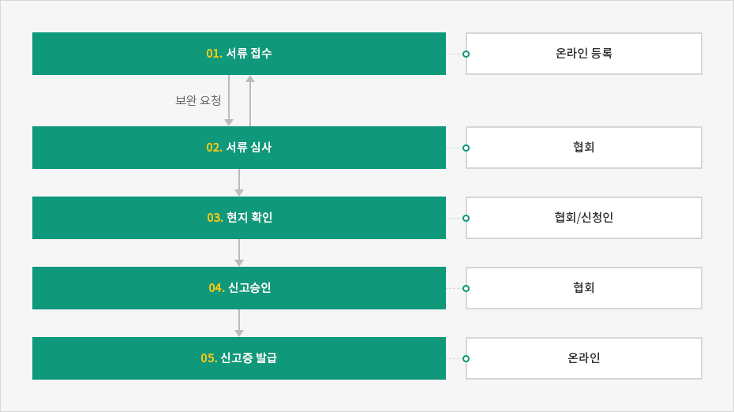
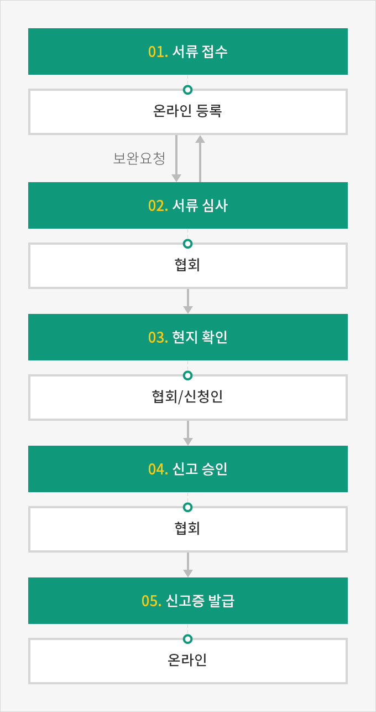

연구개발서비스업
- Home
- 인센티브
- R&D 센터
- 연구개발서비스업
연구개발서비스업은 연구개발의 아웃소싱을 담당하는 산업으로, 영리를 목적으로 연구개발을 독립적 또는 수탁받아 수행하는 연구개발업과, 연구개발수행을 지원하는 연구개발지원업이 있다. 연구개발서비스업자는 (사)연구개발서비스업협회(과학기술정보통신부의 대행 운영기관)에 연구개발서비스업을 신고 · 등록하면 국가연구개발사업 등에 참여하거나정부의 각종 지원을 받을 수 있다.
※ 현황 : 연구개발업 821개, 연구개발지원업 710개 (2019년 8월 현재)
※ 관련규정 : 「국가과학기술 경쟁력 강화를 위한 이공계지원 특별법」 제2조, 제25조
※ 관련규정 : 「국가과학기술 경쟁력 강화를 위한 이공계지원 특별법」 제2조, 제25조
| 구분 | 사업 내용 | 신고대상 업종 |
|---|---|---|
| 연구개발업 | 연구개발 수요를 자체적으로 충족하지 못하는 기업 등에 대한 연구개발 활동의 일부 또는 전부를 대행 (위탁연구)하거나 시장에서 필요로 하는 기술을 독자적으로 개발하여 공급하는 사업 |
|
| 연구개발 지원업 | R&D컨설팅, R&D기획 및 평가, 연구장비의 대여 및 거래, 기술경영 및 기술전략, 과학기술정보의 분석과 이에 필요한 기술인력의 확보 및 지원을 통하여 연구개발 주체들의 연구개발 활동을 지원하는 사업 |
|
※ 출처 : 한국연구개발서비스업협회, 연구개발서비스업 신고 및 지원제도
신고방법
일정 요건을 갖춘 연구개발서비스업자는 (사)한국연구개발서비스업협회에 온라인으로 신고하면 서류심사와 현지확인을 거쳐 신고증을 발급받을 수 있다.
신고절차



- 처리기간 : 신고서가 접수된 날로부터 30일 이내에 처리된다. 단, 신청서 및 관련서류 미비에 의한 보완기간은 처리기간에 산입하지 않는다.
- 서류접수 - 온라인 등록 (보완요청)
- 서류 심사 - 협회
- 현지 확인 - 협회/신청인
- 신고승인 - 협회
- 신고증 발급 - 온라인

문의처(연구개발서비스업 신청)
한국연구개발서비스업협회
- TEL : 02-540-4172
- FAX : 02-540-4132
- 이메일 : korsia@rndservice.or.kr
- 홈페이지 : www.rndservice.or.kr
인정요건
인정요건은 인적요건과 물적요건, 매출액요건을 모두 충족하여야 한다.
| 구분 | 연구개발업 | 연구개발지원업 |
|---|---|---|
| 인적요건 | 이공계인력 5명 이상 | 이공계인력 2명 이상 |
| 물적요건 | 독립된 연구시설 보유 | 해당 없음 |
| 매출액요건 | 총 매출액 중 연구개발서비스 매출액 비중 50% 이상 | - |
지원 내용
연구개발서비스업으로 신고 · 등록 기업은 국가연구개발사업 참여 지원, 연구인력 지원, 조세지원, 금융지원 등의 혜택을 받을 수 있다.
인력지원
| 지원항목 | 관련 내용 | 문의처 | 전문연구요원 (병역특례) 선정기업 지정 제도 | 병역지정업체 지정 등 「병역법」 제36조, 제39조 | KOITA 02-3460-9124 |
|---|
※ 전문연구요원(병영특례) 선정기업 지정신청은 한국산업기술진흥협회(KOITA)에 신청한다.
참여지원
| 과학기술 정보통신부 | 산업통상 자원부 | 중소벤처 기업부 | 국토교통부 | 농림축산 식품부 |
|
|
|
|
|
|---|
※ 연구개발서비스업자 인건비 현금 계상) 연구개발서비스업체가 국가연구개발사업에 참여할 경우 연구개발비 중 내부 인건비를 현금으로 계상하도록 하여 연구활동을 지원하고 있다.
금융지원
| 지원항목 | 내용 |
|---|---|
| 기술보증제도 | 기술력을 보유한 중소기업의 기술성을 심사하여 기술보증기금이 기술보증서를 발급하여 금융기관 등으로부터 자금지원 |
| 기술평가제도 | 무형의 기술을 대상으로 해당기술의 기술성, 사업성, 시장성 등을 평가하여 금액, 등급, 평점, 의견을 표시하는 제도 |
| 문의처 | 기술보증기금 : 1544-1220 |
조세지원
| 지원항목 | 내용 |
|---|---|
| 창업중소기업 등에 대한 세액감면 | 수도권 과밀억제권역 외의 지역에서 창업한 중소기업자로 지정받은 기업과 창업보육센터 사업자로 확인받은 연구개발서비스업체에 대해 소득세 또는 법인세의 일정률을 감면 |
| 중소기업 특례 적용 | 중소기업 중 연구개발업과 연구개발지원업의 규모 및 소재지에 따라 소득세 또는 법인세의 일정률을 감면 |
| 연구개발업에 대한 R&D 비용 세액공제 |
기업에서 발생한 연구개발비의 일정률을 법인세 또는 소득세에서 공제 |
| 연구 및 인력개발에 관한 설비투자 시 감면 |
내국인의 연구 및 인력개발 또는 신성장기술의 사업화를 위한 시설투자(중고품 제외)에 대하여 투자금액의 일정률을 소득세 또는 법인세에서 공제 |
| 기술이전 및 기술취득 금액 세액공제 |
내국인이 특허권, 실용신안권, 기술비법 또는 기술을 이전 및 취득한 경우 취득금액의 일정률을 당해 연도 소득세 또는 법인세에서 공제 |
| 중소기업특별세액 감면 | 중소기업에 대해 소득세 또는 법인세의 일정률을 경감하여 주는 제도 |
| 연구개발 관련 출연금 등 과세특례 | 연구개발을 위해 출연금 등 자산을 받은 경우 소득금액 계산 시 상당금액을 익금불산입 |
| 연구개발특구에 입주 시 첨단기술 기업에 대한 감면 |
연구개발특구에 입주한 첨단기술 또는 연구소기업으로 감면대상 사업을 영위 시 소득세(법인세)를 감면 |